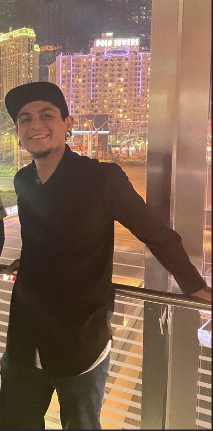

Welcome all! My name is Christian Soto, or (Chris.) I am a 32 years old man born in Whittier, CA but raised in Las Vegas, NV since I was 6!
I have always and will always have a deep passion for cars which is why I spent much of my life as an automotive technician. Recently, however, I started seeing that the automotive industry, and really every industry, is changing because of computers. Computers, computer languages, computer operating systems, and A.I. is changing the way humans do things and think.
I found I wanted to try and learn as much as I could about computers so I started taking college classes for I.T. I started going for CompTIA certificates and learning all I could about how computers and the internet works. I got a CompTIA Network + which explains how computers talk to each other and how the internet of the world works. I got a cybersecurity certificate from my local university which taught me a bit about everything from windows Active Directory to Python to Linux and more.
For my first IT job, which I got in 2020, I started working at a small mom and pop shop as a help desk technician. It wasn’t for very long because I found a better opportunity shortly after but it did provide enough of a foundation for me to move on and understand a lot more of what happens in corporate networks. After that I started working at a bigger company, Robert Half MSP which opened my eyes to many companies calling in for IT support all at once. It was an extremely fast paced and massively learning experience for me. I was so immersed by the things I learned and the connections I made. Unfortunately that did not last long either though as I quickly found a great opportunity at MGM Grand as a Computer Engineer. I was there for about a year and a half before I left for City National Bank to start as a help desk technician again. I started realizing I could not move laterally out of help desk no matter how much time I was at a company or how many positions I switched to or certifications I got.
I decided to take a step back, get out of I.T. for a moment and rethink what I wanted from this. I decided, as much as I like cars and tearing things down and building/fixing things, that that’s what I would like to get out of software development. Making new websites, making new code and experimenting to see what I could do and create as well as break and fix. And so, here we are!
I am now taking two udemy courses. One for full stack developer and one for python programmer.